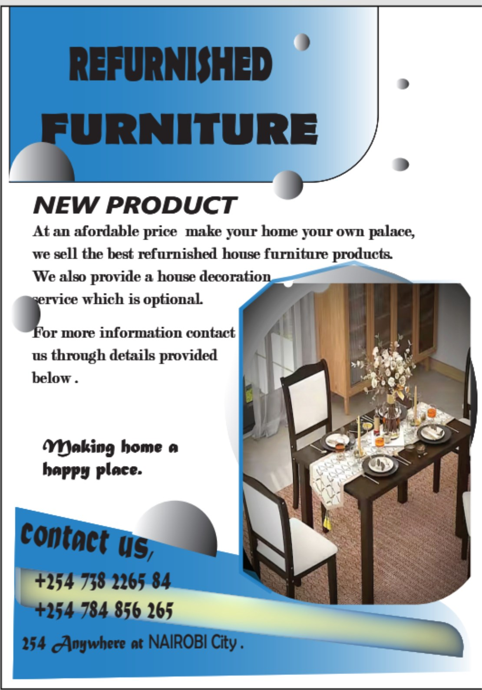

A REFUNISHING FUNITURE COMPANY POSTER
"This poster advertises "REFURNISHED FURNITURE" as a "NEW PRODUCT," emphasizing affordability and the ability to transform a home into a "palace" with their refurnished house furniture products. It also offers an optional house decoration service. The poster encourages potential customers to contact them for more information using the provided phone numbers and notes their service availability "Anywhere at NAIROBI City." The tagline "Making home a happy place" encapsulates their mission. "

INFO GRAPHICS OF A BUSINESS COMPANY
"This info graphics delivers clear, practical tips on starting a business using a clean layout with blue tones and circular images for visual appeal. It organizes information into four actionable steps, making it easy to follow. The design balances text and visuals well, enhancing readability and engagemet. Shared by Prex's inc Business company."

A LOGO DESIGN FOR SPICE FM RADIO STATION
"The logo features the text "SPICE FM" Created for a radio station as a project written in a bold and with a stylized font, positioned in front of a vibrant, multi-toned flame graphic that transitions from orange to yellow hues. The flame design suggests warmth, energy, or intensity, aligning with the "Spice" element of the name."

A BROCHURE FOR UTALI TOUR AND TRAVEL COMPANY
"This brochure advertises "Utali Tour & Travel," a company located at 123 VILA in Nairobi City, specializing in planning vacations and exploring different tourist destinations. They offer private and custom tours daily. Contact about the company is provided through email , website, social media and number.".

A MENU FOR PREX BAKERY
"This menu for Prex Bakery showcases a range of pizza and burger options, presented with clear pricing in Kenyan Shillings (Ksh). The design incorporates imagery of a pizza and a burger with fries, alongside contact information and a website address, indicating a focus on food offerings and accessibility for customers. The layout is structured to easily convey the available items and their respective costs."

A BUSINESS CARD
This business card, designed for Ginford Songa, CEO of ATEAM STUDIO, effectively presents essential contact information for Ginford ,that is the email, number and location .
.jpeg.)